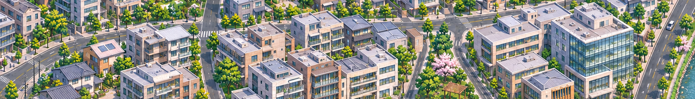
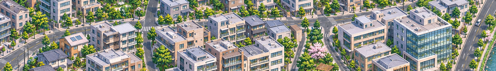

006北邻：学校、诊所与社区市场
延续已认可的004＋005城市，向北展开。006为一张新的原生候选，仍待审画；前一幅拼接画面已获认可。
006尚未拼接就绪。共享楼体与路面被重新生成，不能直接沿y701整带裁拼；五个设计围合不是实际完整街坊数。实际路网尚未描线，本页和Tiled不提供006导航通过声明。
006原图 · RGB1672×941 · 3,934,287字节。未缩放或滤色，当前适应页面显示。
共同带原像素对照
以下两条为同一拟定位置的原像素裁区，分别独立显示，没有拼成一幅通过图。006拟相对已认可拼图放置(1520,-701)，此平移是接续设计，尚未验证为整带配准。
006返回图下沿：x0–1672，y701–941
认可拼图北沿参考：x1520–3192，y0–240
学校翼楼与球场、社区诊所、市场棚顶在新画面中可辨。局部住宅组合仍相似，原生细节和少量暖色窗面留待审画；设计J3—L3短支路实际被楼体、棚顶和步行前场占用，未形成连续车行沥青，不能按底稿补导航。
本轮只请求一张006，接续累计7次图像请求／6张成功。实际尺寸与文件SHA见本张记录。约旧25图面积1/4目标保持，未报面积完成率、最终图数、全城或正式游戏验收。原图、旧路与用户手调保留。